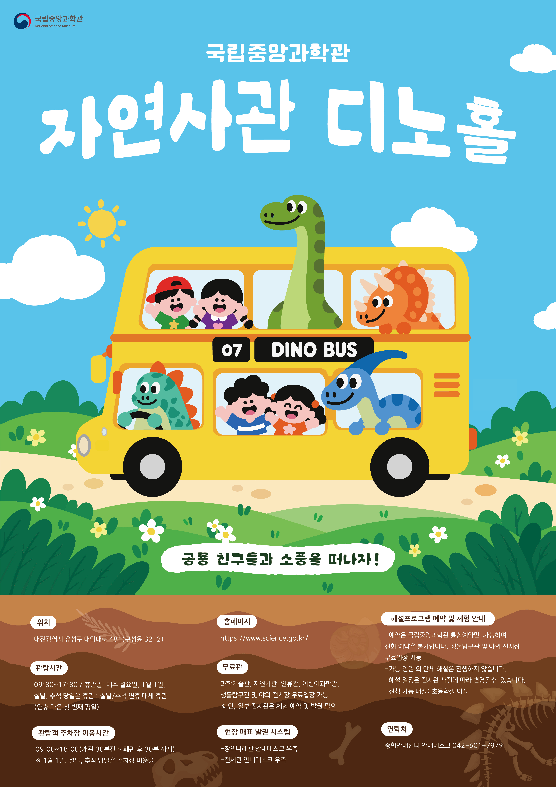
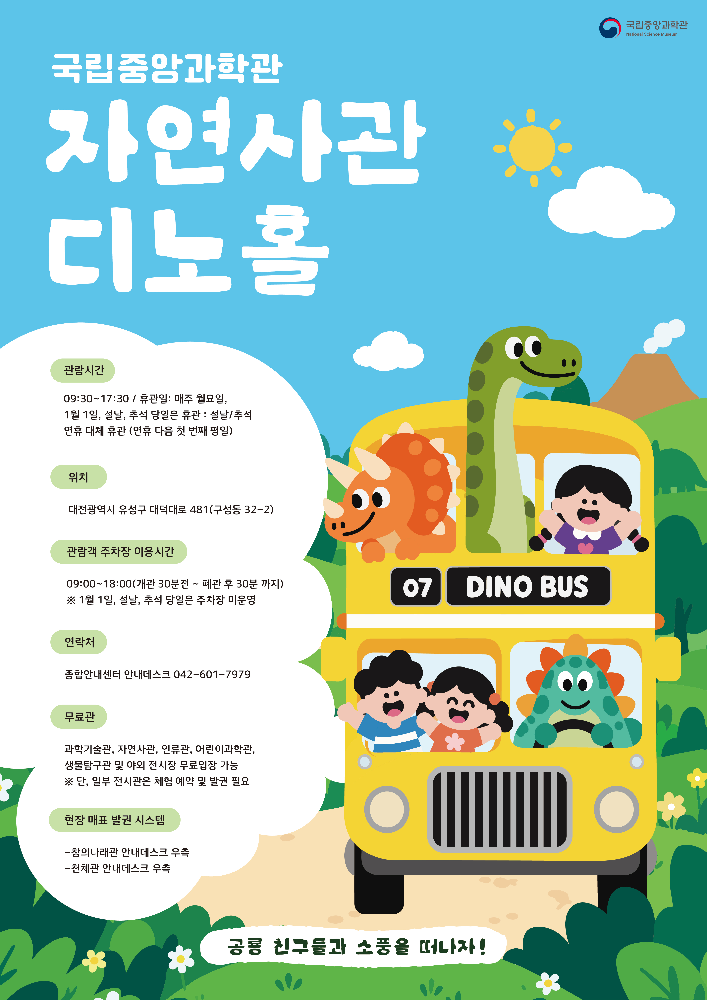

overview
한국영화박물관 상설 전시 <초기 영화로의 초대>를 알리기 위해 제작한 광고 포스터이다. 과거 영화로 떠나는 시간 여행을 콘셉트로, 대형 영사기와 계단을 오르는 인물의 실루엣을 결합하여 영화의 역사 속으로 들어가는 모습을 시각적으로 표현하였다.

overview
한국영화박물관 상설 전시 <한국 영화를 보다>를 알리기 위해 제작한 광고 포스터이다. 한국 영화 100년의 역사와 기억을 중심으로, 필름 릴과 한국 고전영화 장면들을 콜라주 하여 한국 영화가 걸어온 시간과 이야기를 시각적으로 표현하였다.